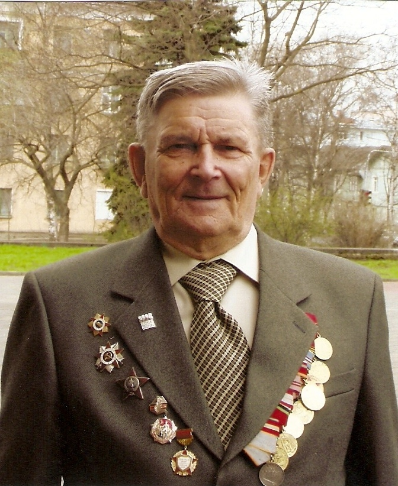

Екимовский Василий Васильевич
Родился 5 февраля 1923 года в д.Токарёво Захаровского сельсовета . Участник Великой Отечественной войны. Воевал на Ленинградском и Волховском фронтах.Участник Парада Победы на Красной Площади в Москве 24 июня 1945 года. Стоял у истоков создания Воздушно-десантных войск Советской армии. Полковник, мастер спорта по парашютному спорту. Кавалер орденов Великой Отечественной войны и Красной Звезды, награждён 12 медалями, в том числе и «За боевые заслуги». Служил в рядах Советской армии с 1941 по 1969 год. Закончил службу в должности начальника парашютно-десантной службы авиации корпуса противовоздушной обороны Вооружённых Сил СССР. После выхода в отставку преподавал и возглавлял курсы гражданской обороны в г. Вологда.